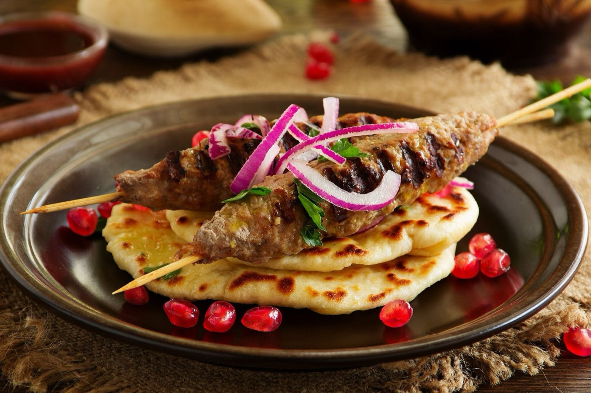
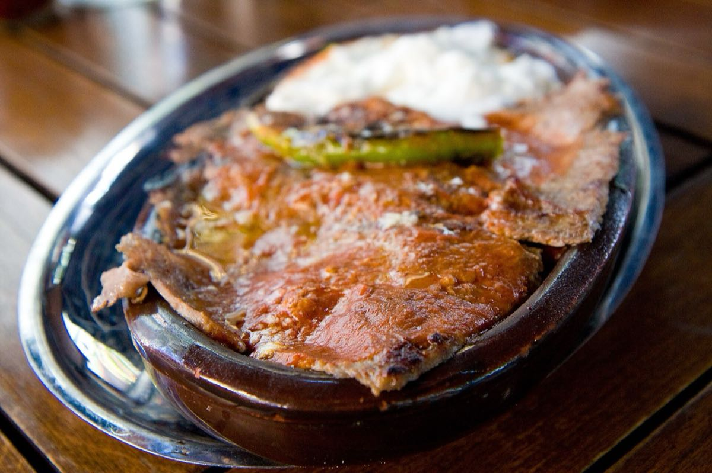
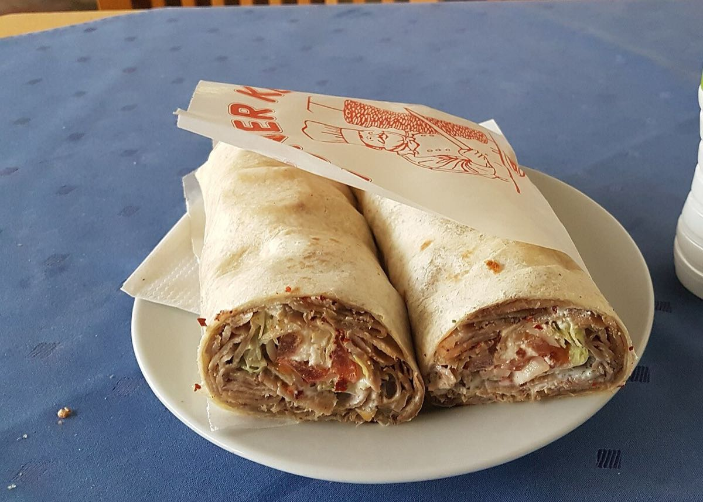

Ocakbaşı klasiği
Adana Kebap
Közde kızaran acılı kıyma; lavaş, közlenmiş biber ve domatesle.
Ocakbaşı geleneği, Sirkeci'de
Közde kızaran Adana, tereyağıyla gelen İskender, fırından yeni çıkmış pide. Hocapaşa Sokağı'nda, her gün gece yarısına kadar.

4,8 Google
Hikâyemiz
Ankara Caddesi'nden Hocapaşa Sokağı'na döndüğünüzde közün kokusu karşılar sizi. Sirkeci'nin kalabalığı birkaç adım geride kalır; masada lavaş, ocakta şişler. Öğle arasında uğrayan da, akşam ailesiyle gelen de aynı özenle ağırlanır.
Tabaklara Göz AtMenü
Ocakbaşının sevilen tabaklarından birkaçı. Menünün tamamı ve güncel fiyatlar için bizi arayın.
Ocakbaşı klasiği
Közde kızaran acılı kıyma; lavaş, közlenmiş biber ve domatesle.

İnce döner, tırnak pide ve domates sosu. Üstünde kızgın tereyağı, yanında yoğurt.

İnce açılmış hamur, fırından çıktığı gibi. Lahmacunu limon ve maydanozla dürün.

Lavaşa sarılı, elde yemelik. Yolda olanlar için doyurucu bir öğün.

Köpüklü ve soğuk; acılı bir tabağın yanında ferahlatır.
Kebaplar ocakbaşında, közün üzerinde pişer.
Kullandığımız tüm etler helal kesimdir.
Haftanın yedi günü, gece yarısına kadar açığız.
Tekerlekli sandalyeyle rahat giriş, uygun oturma düzeni ve park yeri.
Gerekmez. Ancak akşam 19:00 ile 21:00 arası ve hafta sonları yoğun oluyoruz; kalabalık geliyorsanız formdan masa ayırtmanızı ya da aramanızı öneririz.
Haftanın her günü 11:00 ile 24:00 arası açığız. Bayramlarda saatler değişebilir; gelmeden önce aramanızı öneririz.
Evet. Kullandığımız tüm etler helal kesimdir.
T1 tramvayın Sirkeci durağına ve Marmaray Sirkeci istasyonuna birkaç dakikalık yürüme mesafesindeyiz. Hocapaşa Camii'nin hemen yanındayız.
Evet. Girişimiz, oturma düzenimiz ve park yerimiz tekerlekli sandalyeye uygundur.
Rezervasyon
Formu doldurun, sizi arayıp rezervasyonunuzu onaylayalım. Beklemek istemiyorsanız doğrudan arayın.